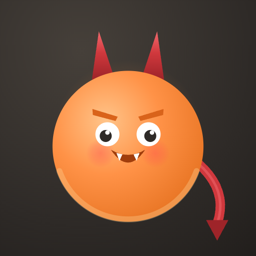
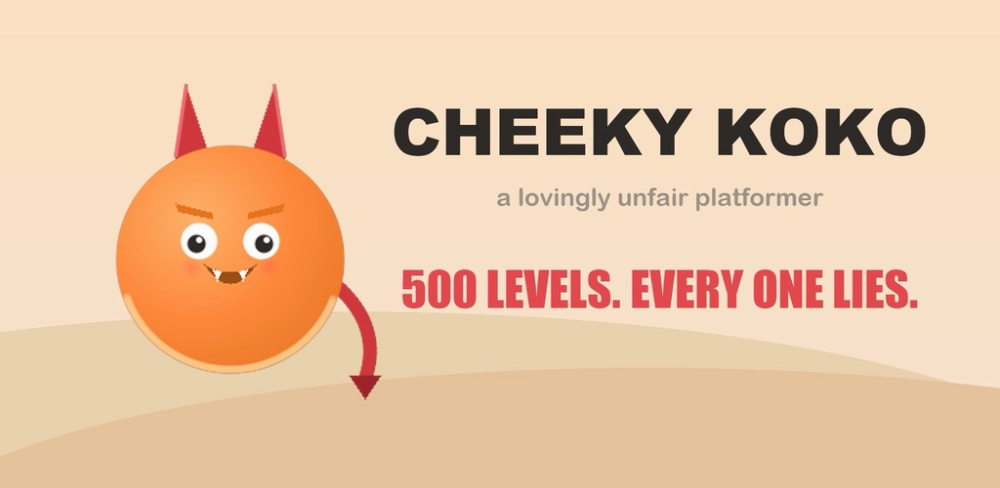
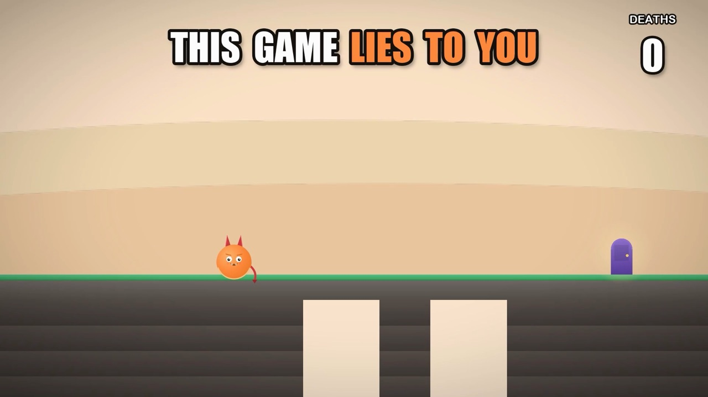
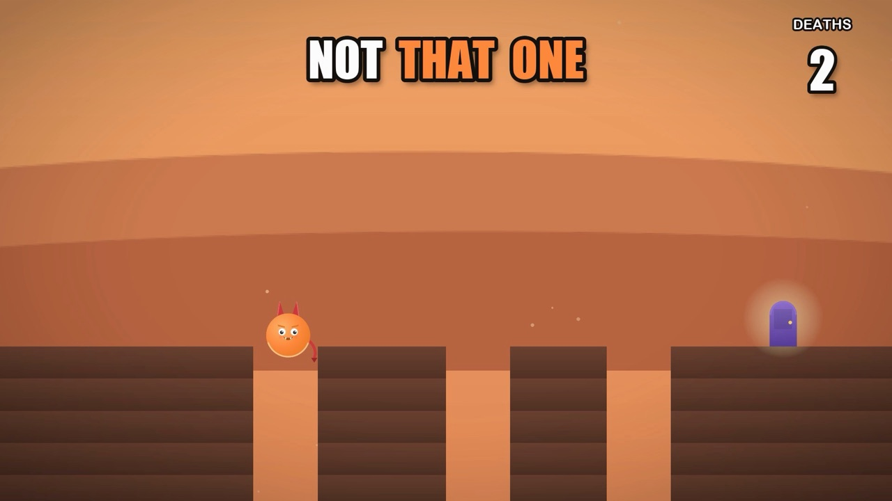
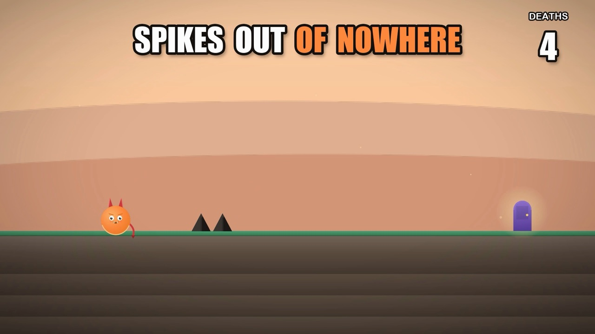
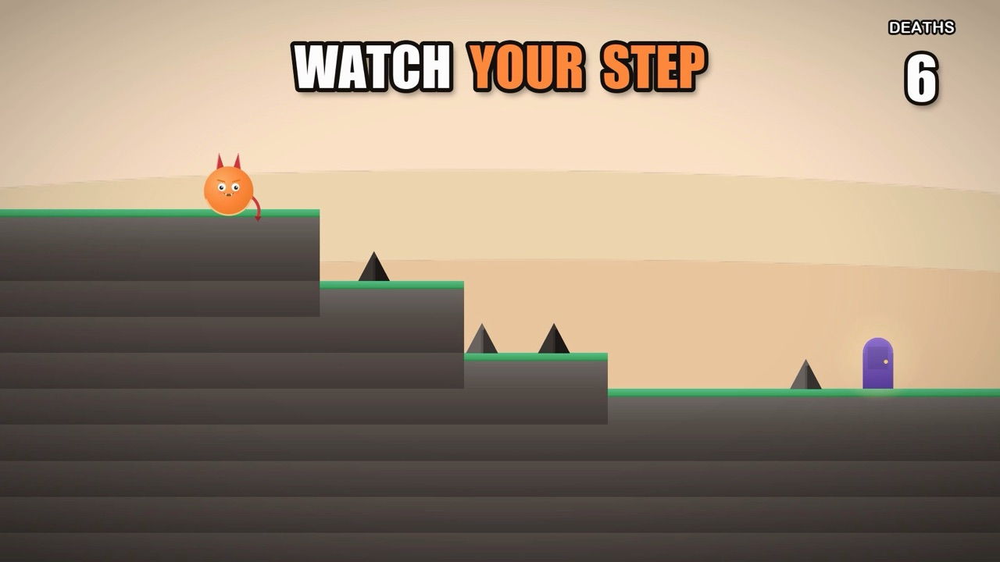
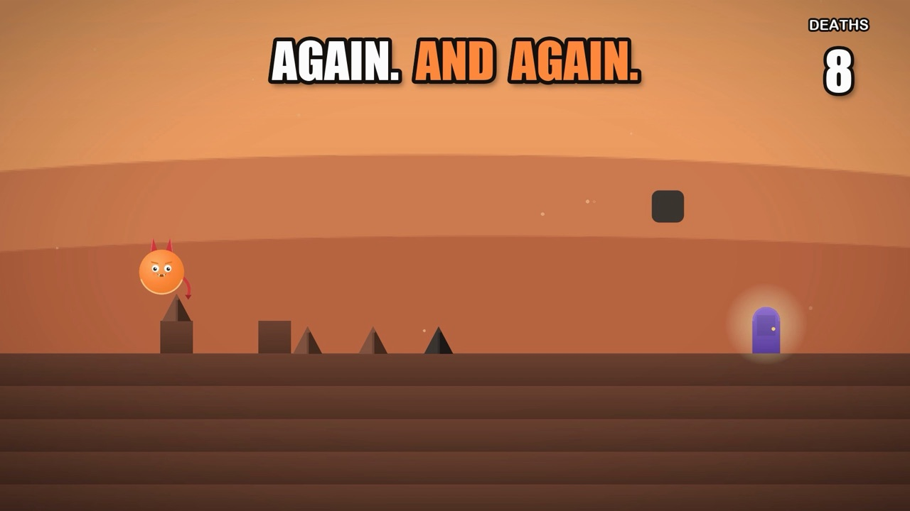
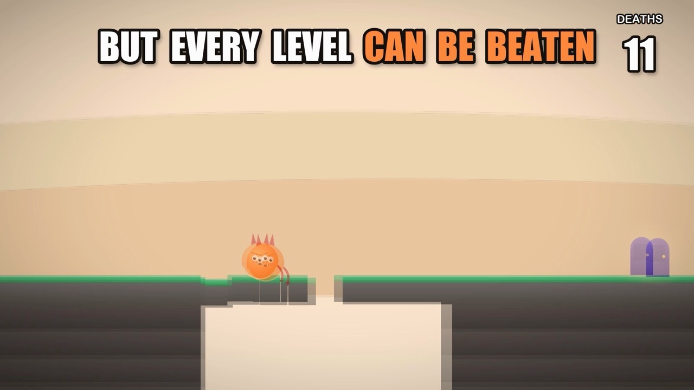

Cheeky Koko
A platformer that lies to you. 500 sneaky levels, every one beatable.

The floor looks solid. It isn't. The door looks like the exit. It's lying. That spike wasn't there a second ago.
Cheeky Koko is a lovingly unfair platformer. Every level looks simple, and every level has a trick waiting for you. Run, jump, die, laugh, and try again. You'll get it next time. Probably.
How it lies
- Floors that crumble the moment you land
- Spikes that pop up where you were about to step
- Blocks that drop on you the moment you walk underneath
- Fake doors, sliding walls and rooms that flip gravity
- A cheeky purple imp who built every level and never stops teasing you
Screenshots






500 levels, 20 chapters
Travel from sunny meadows through caves and frozen rifts all the way down to the Devil's Throne. Each chapter has its own look and its own nasty new ideas.
Every level can be beaten
It's unfair, never impossible. Every single level has been beaten by our test bot, so when you die, the trick was fair. You just didn't see it coming.
Need a hand?
More to enjoy
- Unlock 8 Koko skins as you reach new chapters
- Daily bonus rewards
- Quick levels, perfect for short breaks
- Simple controls: left, right, jump
Cheeky Koko is free to play. It contains ads and optional in-app purchases. Remove Ads is a one-time purchase.
Think you can't be fooled? Koko thought so too.